Bastionar el sistema de arranque de un sistema operativo, Ubuntu 20.04 en este caso, implica fortalecer la seguridad del proceso de arranque evitando que cualquiera pueda acceder al sistema, manipulen los archivos de arranque y modifiquen el sistema operativo.
Vamos a realizar algunas configuraciones de seguridad en el GRUB para impedir que un actor malicioso pueda alterar la secuencia de arranque.
Es una técnica de bastionado que evita que los usuarios vean el menú de GRUB durante el inicio del sistema. Esto es útil cuando se desea impedir el acceso no autorizado a opciones avanzadas del sistema de arranque.
En este apartado, exploraremos los pasos necesarios para ocultar el GRUB en Ubuntu 20.04.
En primer lugar, iniciamos el sistema, accedemos con nuestro usuario y abrimos una terminal con la combinación de teclas Ctrl + Alt + T.
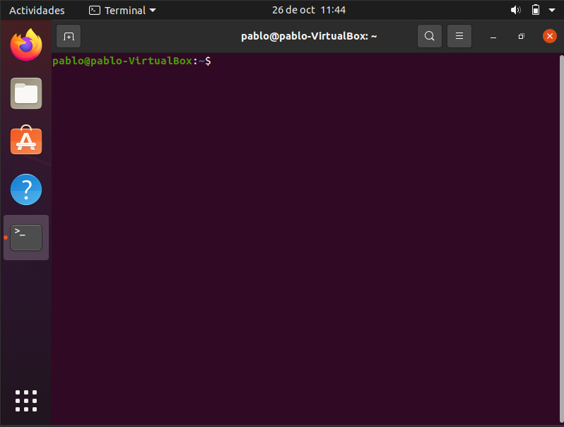
Accedemos como superusuario al fichero de configuración de GRUB 2 con el siguiente comando:
sudo nano /etc/default/grub
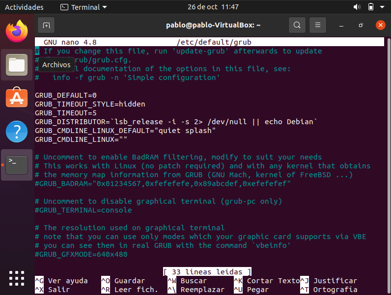
Modificamos el parámetro GRUB_TIMEOUT=5 a GRUB_TIMEOUT=0, que es el tiempo que aparece en pantalla por defecto, así que, de esta forma, no aparecerá al arrancar el sistema.
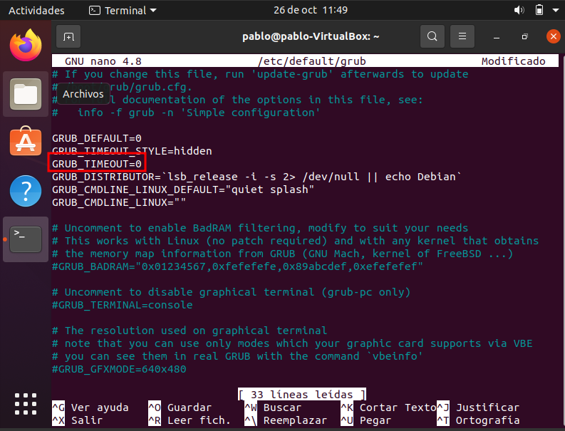
Guardamos en nano con el atajo Ctrl + O y salimos con Ctrl + X
Aplicamos los cambios en el GRUB con el comando:
sudo update-grub
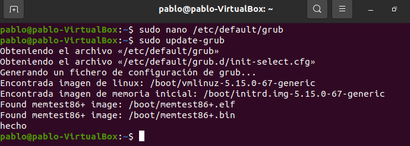
Al configurar una contraseña en GRUB, se restringe el acceso a opciones avanzadas del sistema, como el modo recuperación la edición de parámetros del kernel.
Para poder establecer una contraseña de arranque, seguimos los siguientes pasos.
Primero, creamos un hash con la contraseña a nuestra elección y guardamos en el portapapeles el hash que nos genera para el GRUB.
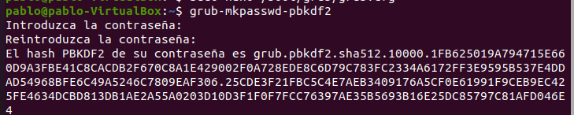
Vamos al siguiente fichero mediante el comando:
sudo nano /etc/grub.d/00_header
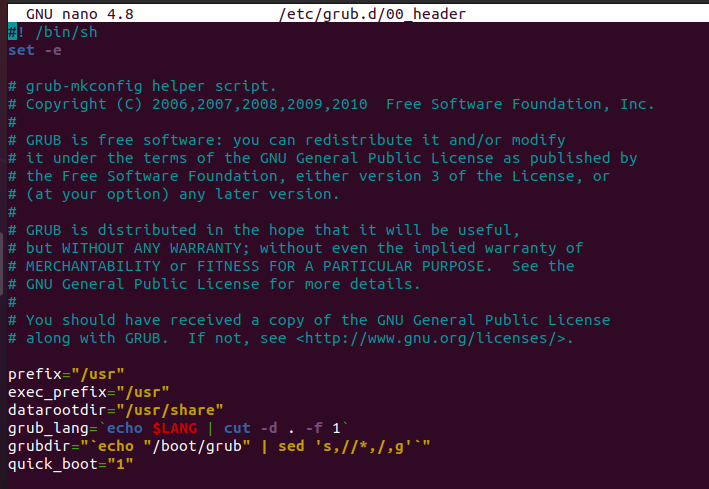
Añadimos los siguientes líneas al final del archivo y guardamos con Ctrl + O y salimos de nano con Ctrol + X .
El superuser será el usuario a nuestra elección que exista en el sistema y el sha512 es el hash que generamos antes.
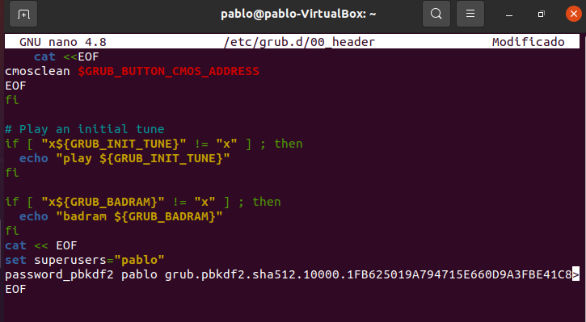
Actualizamos la configuración del GRUB
sudo update-grub
Y reiniciamos.
reboot
Al iniciarse el gestor de arranque, nos aparece la siguiente pantalla para introducir nuestro superusuario de GRUB y su contraseña y poder acceder.
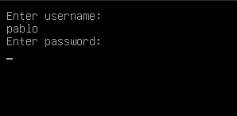
Hacer una copia de seguridad de la configuración del GRUB es una practica muy recomendada, especialmente si queremos realizar cambios importantes en la configuración de arranque. Esto nos garantiza que podamos recuperar la información original de los ficheros de configuración del gestor de arranque en caso en que haya algún fallo crítico en el sistema.
A continuación, indicamos los pasos a seguir para realizar copias de seguridad de los scripts y la configuración principal del GRUB.
El primer paso es copiar la configuración principal del GRUB que se encuentra en el archivo grub.
sudo cp /etc/default/grub /etc/default/grub.backup
Esto hará que creemos una copia del archivo original con otro nombre, es decir "grub.backup" en la misma carpeta.
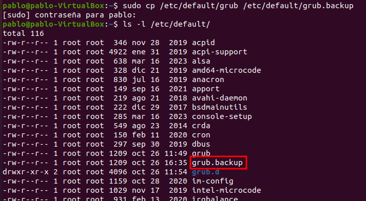
En el siguiente paso, vamos a respaldar los scripts y configuraciones adicionals del GRUB.
Ejecutamos el siguiente comando para realizar una copia completa de todo el contenido de grub.d.
sudo cp -r /etc/grub.d /etc/grub.d.backup
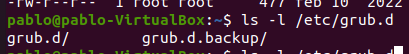
También podemos respaldar el archivo generado de configuración del GRUB.
sudo cp /boot/grub/grub.cfg /boot/grub/grub.cfg.backup
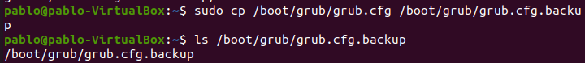
Por último, si queremos restaurar todos estos archivos, ejecutamos los siguientes comandos.
sudo cp /etc/default/grub.backup /etc/default/grub
sudo cp -r /etc/grub.d.backup /etc/grub.d
Regeneramos el archivo de configuración grub.cfg:
sudo update-grub
Esto hará que se restaure toda la configuración a la versión de respaldo.
El modo de recuperación del GRUB nos permite acceder al sistema con privilegios de root, lo cual representa un grave riesgo de seguridad si algún agente malicioso quiere hacer modificaciones.
Para hacerlo, tenemos que seguir los siguiente pasos.
Editamos el archivo /etc/default/grub
sudo nano /etc/default/grub
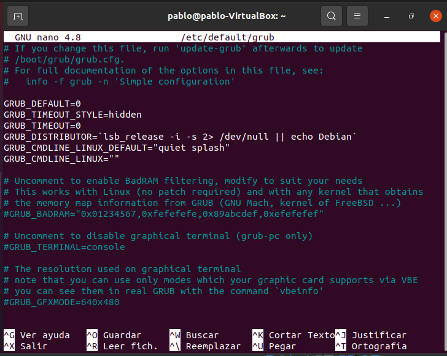
Descomentamos la siguiente línea para desactivar el modo de recuperación:
GRUB_DISABLE_RECOVERY="true"
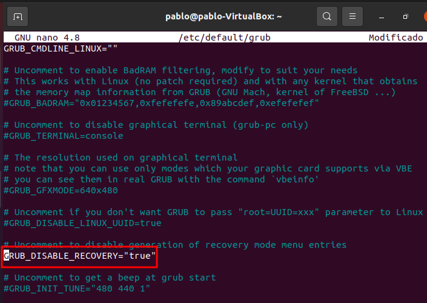
Guardamos los cambios y actualizamos la configuración del GRUB.
sudo update-grub
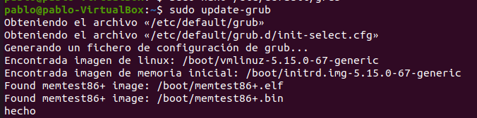